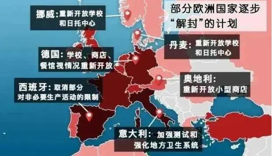
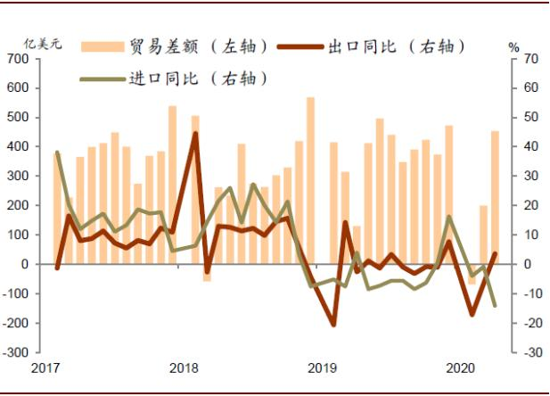

国际贸易形势好转,外贸企业如何“抢跑”
一、利好政策频出，形势日趋好转
1、5月7日国务院公布了新一批46个跨境电商综合试验区（以下称跨境电商综试区）的城市名单。截止目前，跨境电商综试区经过5次扩围，数量达到105个，
覆盖全国30个省、自治区和直辖市；
综试区内跨境电商零售出口货物免征增值税和消费税、企业所得税核定征收。税收方面的优惠政策由原来的“试行”改为“实行”，给企业吃了定心丸。
2、欧洲多国陆续“解封”，众多大型企业复产复工：
● 德国、法国已经解除对公共生活的一些限制；
● 英国：研究他国经验，着手“解封”计划；
● 丹麦、挪威、捷克将陆续“解封”；
● 意大利为逐步“解封”做准备：“创造与病毒共存的条件”；
●LV重启法国工厂转产口罩，或将恢复手袋生产；
●大众4月20日起部分开放在西班牙纳瓦拉地区的工厂；大众（中国）32家工厂恢复生产；
●戴姆勒计划4月20日起恢复生产。

3、海关总署5月7日公布的数据显示，4月份中国出口迎来“小阳春”，出口同比增长8.2%，大幅超出了市场预期。
随着海外疫情边际上出现好转迹象，下半年外需可能迎来恢复性增长。

二、打好抢跑第一枪
1、巩固成果---步步为赢，稳步推进：客户是上帝，订单是企业的命根子，做好客户日常维护与沟通，
及时告知国内及本区域的疫情防控进展，随着市场的恢复，沟通订单计划和产能安排，让客户提早做好订单安排；
供应商作为供应链管理重要环节，其能否及时复工以及产能恢复程度，将直接影响外贸企业的接单和交货。所以，
需要及时联系供应商，了解其目前复工的计划安排。必要时，尽可能开发更多新的供应商；
2、扩大战果---新品类、新市场：根据中国海关报告，从贸易增长区域来看，中国与东盟贸易总值增长5.7%，
中国与“一带一路”沿线国家合计进出口总额增长0.9%；阿里旗下跨境电商平台速卖通数据，疫情防控期间，速卖通在西班牙和意大利的访问流量同比增长了20%和14%；
建议外贸企业优先关注上述地区市场。
eBay向外公布了疫情期间美国站点的热销产品，涉及居家办公、美容美发、DIY手工、家装家居、娱乐、健身六大品类实现逆势
增长。其中，
●网络摄像头增长了1000%；
●美甲护理增长255%；
●家用酿酒器销量增长了125%；
●粉刷用具及设备增长145%；
●拼图增长了1395%；
●力量训练器材增长了854%。
外贸企业结合自身优势和市场需求，积极调整市场策略，扩大业务范畴。
3、随机应变---防患未然：根据相关专家分析，虽然新冠肺炎疫情暂时得到有效控制，但是依然存在全球二次爆发的可能；全球央行大放水，据德意志银行监测数据，
在过去6周里，G10央行的放水规模超过2.6万亿美元，基本等于英国或法国一年的GDP总量，债务危机可能即将到来；美国股市泡沫叠加美国大选年，
市场政策充满不确定性；全球市场的动荡，首先影响的是出口行业，紧跟着的就是出海企业，所以一定密切关注市场变化，随机应变，审慎经营。
三、CBiBank助力外贸企业突围
CBiBank在业务全流程线上办理的基础上，多措并举，提升服务效率，助力中国外贸企业打响“抢跑”第一枪。
● 全球快速收款：在线申请1个工作日批复，国际汇入汇出3个工作日到账，帮助外贸企业加速资金流转；
● “疫转账”活动：限时上线 “疫转账”特惠活动，使外贸企业国际汇入汇出综合成本降低30%以上；
● 多币种开户：包括美元、人民币、欧元三大主流国际货币，基本涵盖全球80%以上国家和地区的贸易市场，以便外贸企业灵活调整经营策略和开拓国际市场。
点此返回上一页